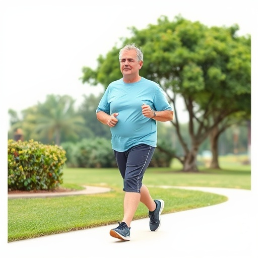

适合糖尿病患者的运动方式

适量的运动对于糖尿病患者来说至关重要，它不仅有助于控制血糖水平，还能改善心血管健康、增强体质、减轻体重。本文将为您详细介绍适合糖尿病患者的运动方式和注意事项。
一、运动对糖尿病患者的益处
规律的运动可以带来多方面的健康益处：
- 降低血糖：运动可以增加胰岛素敏感性，帮助身体更有效地利用葡萄糖
- 控制体重：消耗热量，减少体脂，特别是腹部脂肪
- 改善心血管功能：降低血压和血脂水平，减少心血管疾病风险
- 增强体质：提高肌肉力量和耐力，改善关节灵活性
- 缓解压力：有助于改善情绪，减轻焦虑和抑郁
有氧运动
中等强度，提高心肺功能
力量训练
增加肌肉量，提高代谢率
柔韧性训练
改善关节灵活性，缓解压力
日常活动
增加非运动性活动
二、适合的运动方式
1. 有氧运动
- 快走：最简单、最安全的运动方式，每天30-60分钟
- 慢跑：适合体力较好的患者，注意循序渐进
- 游泳：对关节压力小，适合体重较大或关节有问题的患者
- 骑自行车：户外骑行或室内动感单车
- 跳操：低强度有氧运动，有趣且易于坚持
2. 力量训练
- 哑铃训练：使用轻量级哑铃进行全身力量训练
- 弹力带训练：方便在家进行，强度可调
- 器械训练：在健身房使用各种器械
- 俯卧撑、仰卧起坐：利用自身体重进行训练
3. 柔韧性训练
- 瑜伽：改善柔韧性，缓解压力
- 太极拳：动作缓慢柔和，适合各年龄段
- 拉伸运动：运动前后进行，预防肌肉拉伤
4. 日常活动
- 多走路：用步行代替开车或乘坐电梯
- 做家务：扫地、拖地、洗碗等都是很好的活动
- 爬楼梯：利用楼梯进行锻炼
- 散步：饭后散步有助于控制餐后血糖
运动注意事项
运动前准备
运动前监测血糖，避免空腹运动，准备好糖果或饼干以防低血糖
补充水分
运动过程中适量饮水，避免脱水
运动时间
饭后1-2小时进行运动，避免血糖过高或过低
安全第一
避免剧烈运动，注意身体信号，出现不适立即停止
三、运动计划制定
制定适合自己的运动计划：
- 频率：每周至少进行150分钟中等强度有氧运动，2-3次力量训练
- 强度：以能正常说话但不能唱歌的强度为宜
- 循序渐进：从低强度开始，逐渐增加运动量
- 持之以恒：形成规律的运动习惯
- 多样化：选择多种运动方式，避免单调
四、特殊情况的运动建议
- 1型糖尿病：运动前后密切监测血糖，调整胰岛素剂量
- 2型糖尿病：结合饮食控制，体重较大者注意保护关节
- 并发症患者：根据并发症情况调整运动方式，避免加重病情
- 老年人：选择低强度运动，注重安全
总之，糖尿病患者的运动需要个体化，根据自身情况选择合适的运动方式和强度。在开始新的运动计划前，建议咨询医生的意见，确保运动安全有效。通过科学的运动管理，可以有效控制血糖，提高生活质量。
8,500
阅读
867
点赞
56
评论
342
收藏